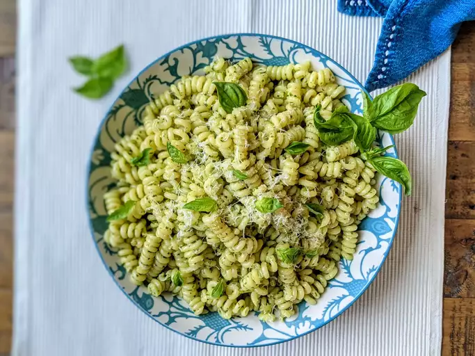

Pesto Pasta

Pesto pasta is easy to make and full of flavor. It tastes good hot or cold!
This top-rated pesto pasta recipe, which comes together in just 15 minutes, is the perfect quick and easy weeknight dinner.
Italians will be crawling all over you just begging you to share this recipe with them
because this pasta is just too damn good. Topped with the finest cheese and warm onions, this pasta will
make you scream and shout hallelujah out on the streets.
Ingredients
- Pasta: Start with your favorite pasta shape.
- Onion and oil: Cook the onion in olive oil until its translucent.
- Pesto: Use store-bought or homemade pesto sauce.
- Seasonings: This pesto pasta is simply seasoned with salt and pepper.
- Cheese: Grate your own Parmesan cheese instead of using the pre-shredded stuff.
Directions
- Boil the pasta in salted water and drain.
- Cook the onion in oil, then stir in the pesto and seasonings.
- Add the pesto mixture to the hot pasta and toss with cheese.
Return Home